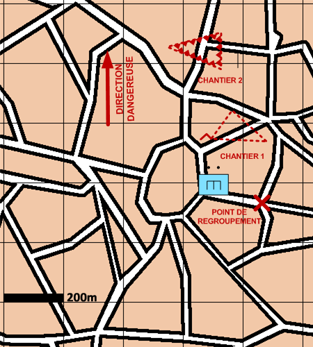

NIVEAU :Pion
ARME :GENIE
MISSION :Realiser Travaux
Objectif principal
- Construire
Modalités d'exécution
-
Rejoindre le lieu du premier chantier (Si une unité a plusieurs obstacles à construire, il commence par les obstacles préliminaires et finit par ceux de manoeuvre : ceux-ci devront être activés par l'ordre de conduite "Activer obstacles") ;
-
Contruire l'objet ;
-
Réitérer pour les chantiers suivants ;
-
Etape optionnelle : une fois un obstacle de manoeuvre construit, l'unité attend de recevoir l'ordre de conduite "Activer obstacles" pour l'activer avant de continuer sa mission;
-
Rejoindre le point de regroupement une fois tous les travaux réalisés.
Schéma de modélisation

Paramètres obligatoires
Chantiers : Liste des travaux à réaliser
Valoriser obstacles : Indique si on valorise les obstacles après construction.
Paramètres optionnels
Position de regroupement
Direction Dangereuse : Orientation privilégiée des capteurs lors de bond ou de reconnaissance de points
Limite gauche / limite droite
Note : lors de la réalisation d'un obstacle 'Zone minée par dispersion', le paramètre 'densité' accepte des valeurs situées entre 0 et 5.